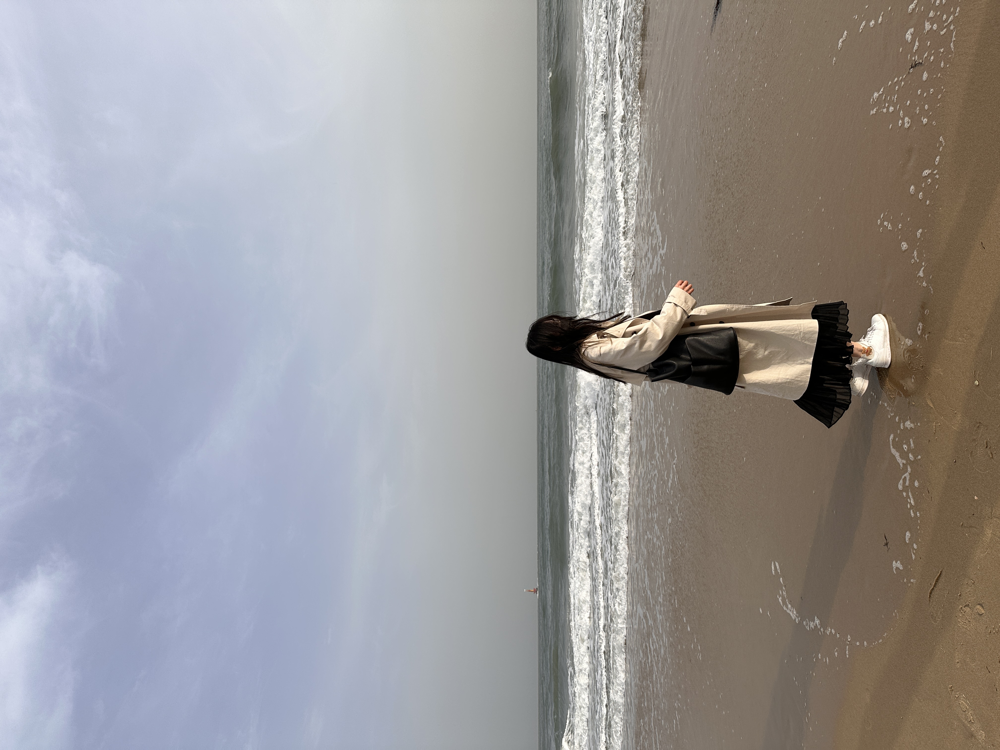
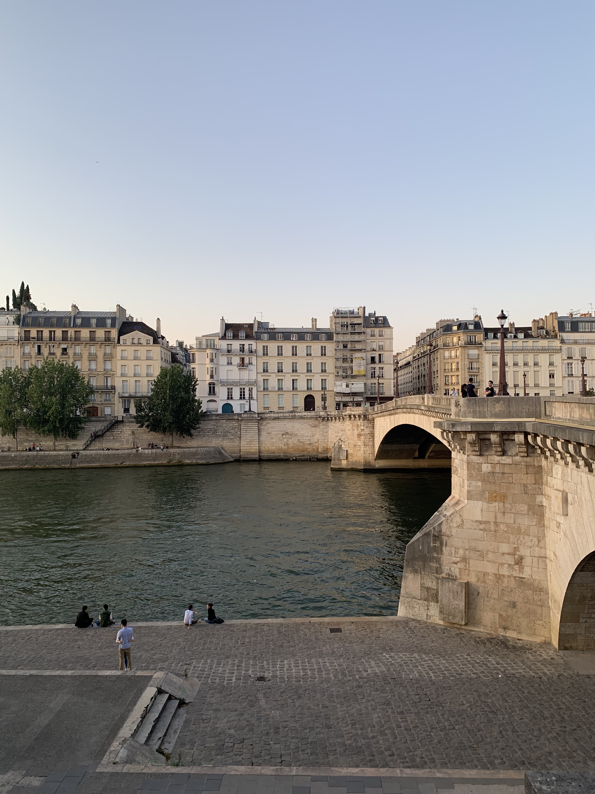
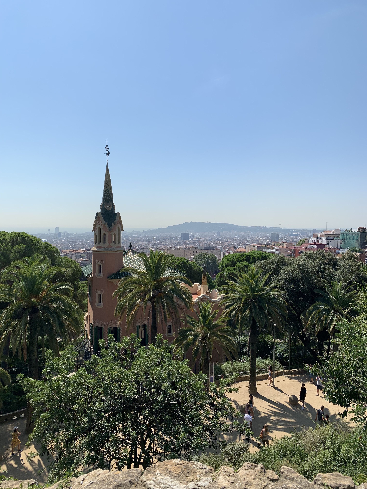
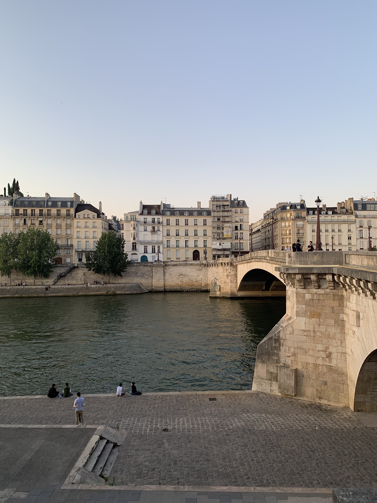
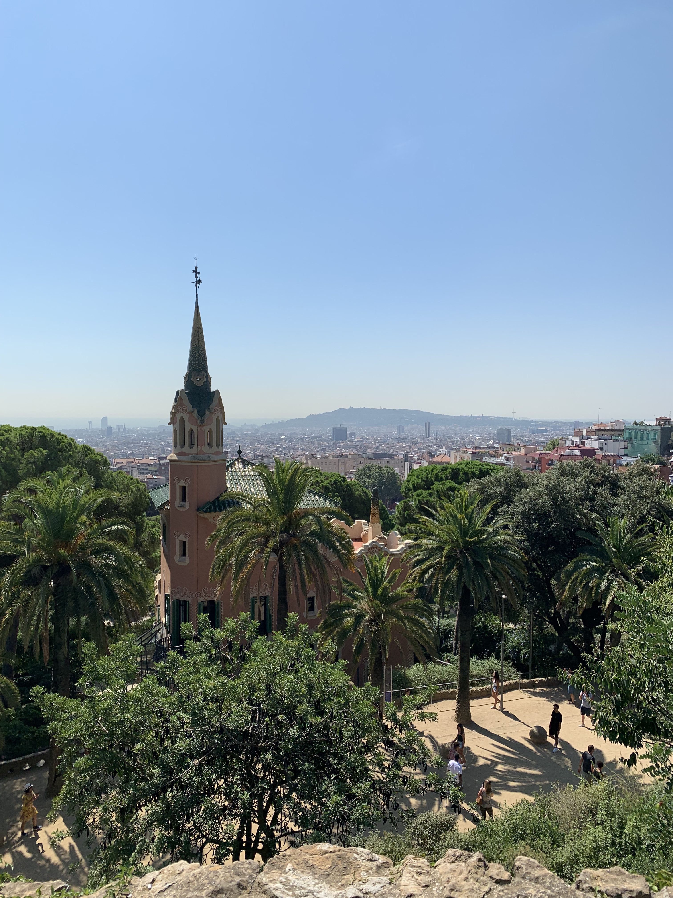

Hi, I'm Lori Jiang! 👋
I'm currently a UX design student at SFU SIAT and I'm passionate about delivering positive user experiences by creating user-centred designs grounded in research.
I graduated with BA in psychology from UBC in 2021 but realized that I needed to pursue something more creative to feel fulfilled. Luckily, I discovered UX design during my gap year, and it combines both my interests of understanding human behaviour and utilizing my creativity.

When I'm not studying, I like to paint, draw, travel, and discover new restaurants in Vancouver with friends!
Some photos from my travels:


 


